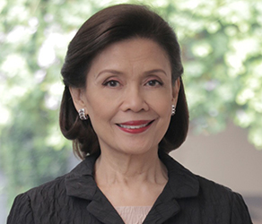

Dr. Elizabeth Quirino-LahozDr. Elizabeth Quirino-Lahoz is the current Chairman of the Board of Trustees and concurrent third president of the Technological Institute of the Philippines (T.I.P.), with campuses in Manila and Quezon City. She assumed the presidency in 2003. Dr. Lahoz succeeded Dr. Teresita U. Quirino and Engr. Demetrio A. Quirino, Jr., T.I.P. founders and first and second T.I.P. presidents, respectively. Dr. Lahoz graduated Magna Cum Laude, AB Communication Arts, from Maryknoll College in 1973. She was also class valedictorian and Communication Arts area awardee. She completed her Master in Business Administration for Senior Executives and Professionals from the Ateneo de Manila University in 1994 and finished her Doctor of Philosophy in Education Major in Educational Administration from the University of the Philippines in 2006. Dr. Lahoz serves in various professional and civic activities. She is a member of the Technical Committee for Educational Leadership and Foundations of the Commission on Higher Education (CHED); the Board of Trustees and the Quality Assurance and Accreditation committee of the Philippine Association of Colleges and Universities (PACU); the Board of Trustees, the Executive Committee, and the Finance Committee of the Private Education Retirement Annuity Association (PERAA); and the Pi Lambda Theta, an international honors society and professional association in education, Philippine Area Chapter. Awards and RecognitionsIn 2013 the Pi Lambda Theta, Philippine Area Chapter, awarded Dr. Lahoz the PLT Eminent Filipino Women Educators Award in recognition of "her outstanding contribution to Philippine Education, Filipino teachers and learners.” In 2006, Dr. Lahoz’s dissertation, ”Portrait of the Filipino as an Outstanding Private School Administrator” was adjudged the “Most Outstanding Dissertation” of the College of Education, University of the Philippines. She was a featured alumna in GURU: Distinguished Educators (UPEAA, 2010) by the University of the Philippines Education Alumni Association (UPEAA). In 2016, Dr. Lahoz was recognized as one of Go Negosyo’s Inspiring Women Entrepreneurs, under the Large Enterprise Category. As second-generation T.I.P. administrator, Dr. Lahoz continues the legacy of the school’s founders, her parents, the real entrepreneurs, and the empowerment of the Filipino youth towards national development. In 2018, Dr. Quirino-Lahoz was named as one of the Maryknoll/Miriam College Amazing Alumni Achiever (Triple A) Awardees. MCTimes (2018) reported that Dr. Quirino-Lahoz “is truly a remarkably intelligent and driven woman with a compassionate heart and a will for service. She embodies loyalty and commitment, manifested in her determination to further and protect the causes she loves: her family and friends, education, T.I.P., the Filipino youth, and her country.” |
Technological Institute
of the Philippines